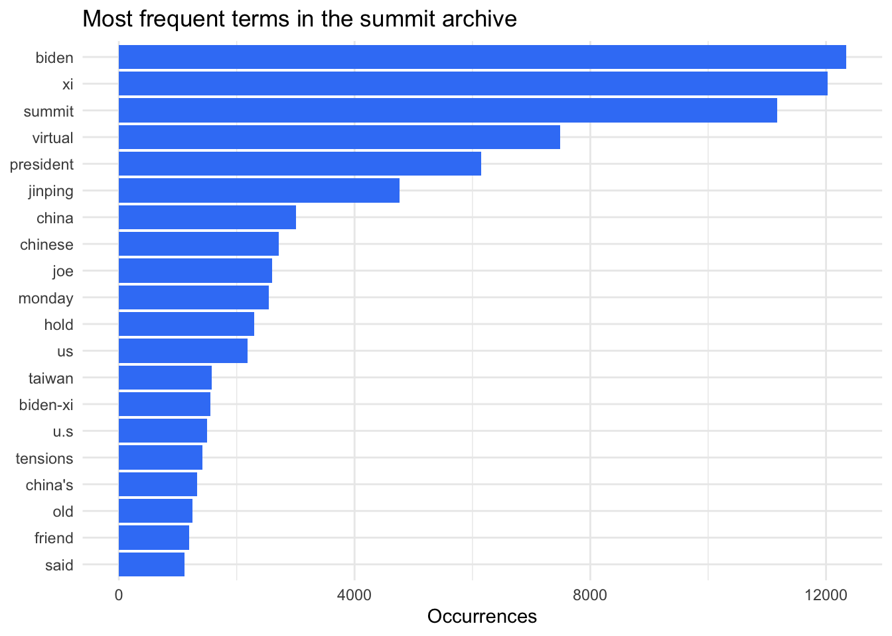
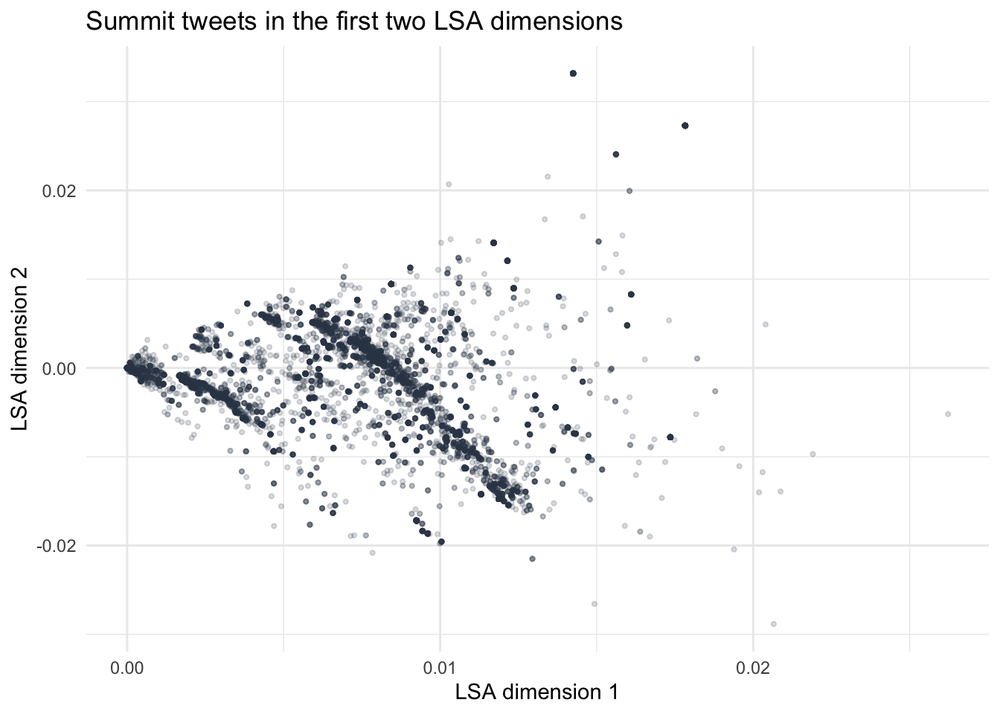
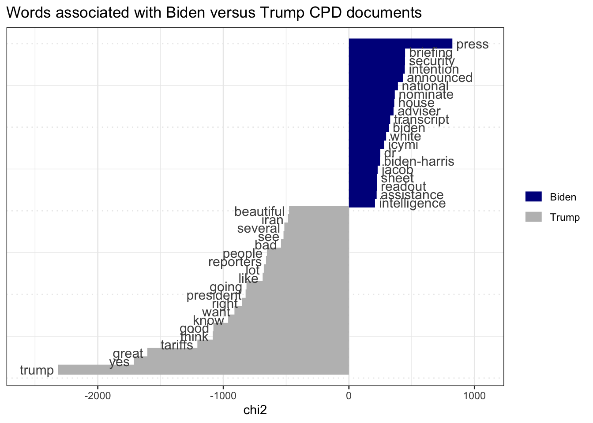
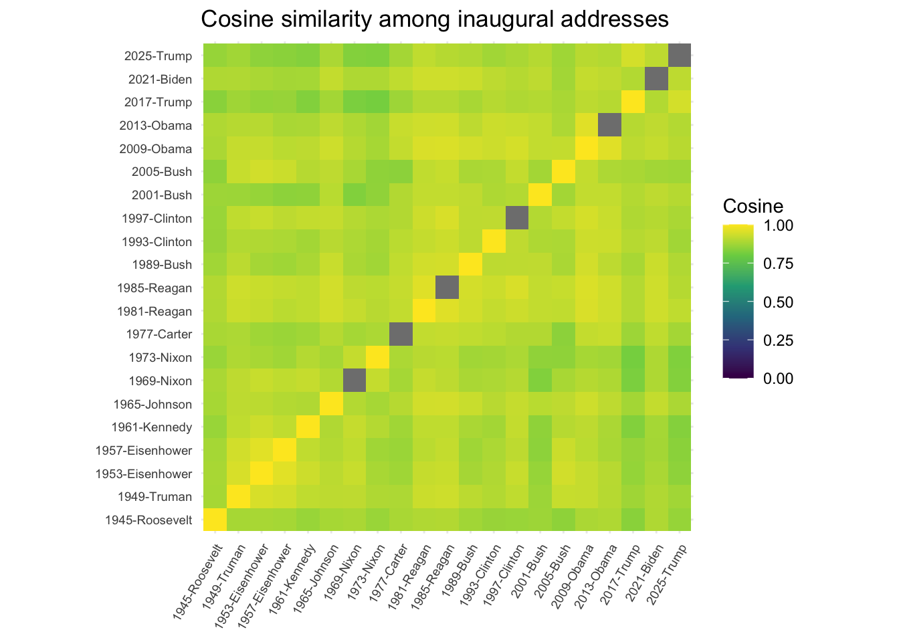
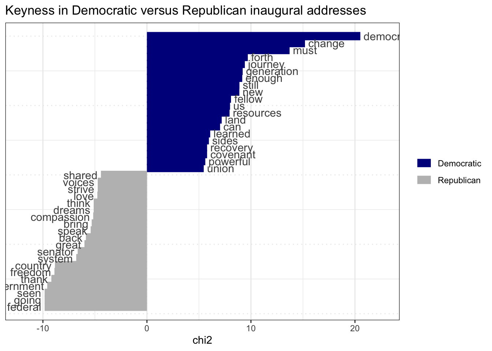

EPPS 6302 Methods of Data Collection and Production: Assignment 6
Text analytics with quanteda
Author
John Glendenning
Published
October 27, 2026
What you will produce
Three corpora read with quanteda — archived summit tweets, presidential documents you collect from GovInfo, and the inaugural addresses — and a short report on what each kind of text can and cannot tell you, including what Wordfish measures.
0. Set up
Install once, in the Console:
packages <-c("quanteda","quanteda.textstats","quanteda.textplots","quanteda.textmodels","tidyverse","httr2","rvest")# Check installation status; install any FALSE entries in the Console.packages %in%rownames(installed.packages())
[1] TRUE TRUE TRUE TRUE TRUE TRUE TRUE
Download quanteda_textanalytics01.R from Teams. Parts 1–3 below follow its three parts.
You need the GovInfo key and the functions from govtdata01.R (Assignment 5) for Part 2.
The key is read from the environment so it is not written into the report. The code below also loads the packages used in the analysis.
In November 2021 Presidents Biden and Xi met by video.
The public (Part 1). Tweets collected during the summit: frequent words, hashtag and mention networks, LSA. This dataset is archived — the API that produced it no longer offers that access, so it cannot be collected again.
The archive contains tweets posted around the November 2021 meeting. I used the text of each tweet as one document. Retweets and repeated posts are still in the file, so the results describe the collected tweets, not a group of unique people.
The frequent words show what appeared most often in this archive. They do not show what the public as a whole believed. The search terms, collection period, repeated posts, and the people who chose to use Twitter all shaped the results.
summit_words <- summit_dfm |>dfm_remove(stopwords("en")) |>dfm_remove(pattern =c("amp", "https", "t.co"))topfeatures(summit_words, 20) |>enframe(name ="term", value ="frequency") |>ggplot(aes(x = frequency, y =reorder(term, frequency))) +geom_col(fill ="#3b82f6") +labs(x ="Occurrences", y =NULL, title ="Most frequent terms in the summit archive")

The most common terms are Biden, Xi, summit, virtual, and president. Words such as China, Taiwan, and tensions also appear, showing that the discussion extended from the meeting itself to wider points of disagreement in US–China relations.
The next two plots connect hashtags or accounts that appeared in the same tweet. A connection does not mean that the accounts follow one another, agree, or worked together.
Co-occurrence network among the 50 most frequent mentioned accounts.
The hashtag network has one main summit cluster centered on Biden, Xi, China, and America. A smaller connected cluster focuses on human rights, Uyghurs, and Tibetans. The mention network is more fragmented and contains separate news, political, and entertainment groups. This is another sign that the archive contains several conversations rather than one unified response to the summit.
LSA groups tweets by similarities in their word use. Each point is one tweet. The axes do not come with a ready-made political meaning, so I would need to read the words and tweets that define each side before naming the patterns.
summit_lsa_dfm <- summit_words |>dfm_trim(min_termfreq =5, min_docfreq =2)summit_lsa <-textmodel_lsa(summit_lsa_dfm, nd =4)lsa_documents <-as_tibble(summit_lsa$docs, rownames ="document")names(lsa_documents)[2:5] <-paste0("dimension_", 1:4)ggplot(lsa_documents, aes(dimension_1, dimension_2)) +geom_point(alpha =0.18, size =0.8, color ="#334155") +labs(x ="LSA dimension 1",y ="LSA dimension 2",title ="Summit tweets in the first two LSA dimensions" )

Most tweets fall into a dense central area, while a few branches and outliers separate from it. This pattern is consistent with large amounts of repeated summit language alongside smaller groups of tweets using different vocabulary. The plot alone is not enough to give either dimension a political label.
The government (Part 2). Collect every document in the Compilation of Presidential Documents (GovInfo, CPD) mentioning “Xi Jinping” since 20 January 2021. Read Xi in context with kwic(), then use keyness to compare the Biden and Trump administrations.
The code searches the CPD collection for the exact phrase "Xi Jinping" in documents published since January 20, 2021. It goes through every page of results and downloads the text supplied by GovInfo. If the key is missing, it stops instead of showing made-up results.
govinfo_key <-Sys.getenv("GOVINFO_API_KEY")cpd_available <-nzchar(govinfo_key)govinfo_search_all <-function(query, api_key, page_size =1000) { offset <-"*" pages <-list()repeat { response <-request("https://api.govinfo.gov/search") |>req_url_query(api_key = api_key) |>req_body_json(list(query = query,pageSize =as.character(page_size),offsetMark = offset,resultLevel ="package",sorts =list(list(field ="publishdate", sortOrder ="ASC")) )) |>req_perform() payload <-resp_body_json(response, simplifyVector =FALSE) pages <-append(pages, list(payload$results)) new_offset <- payload$offsetMarkif (length(payload$results) ==0||is.null(new_offset) ||identical(new_offset, offset)) break offset <- new_offset } purrr::list_flatten(pages)}scalar_chr <-function(x) if (is.null(x) ||length(x) ==0) NA_character_elseas.character(x[[1]])if (cpd_available) { cpd_query <-'collection:(CPD) AND "Xi Jinping" AND publishdate:range(2021-01-20,)' cpd_retrieved_at <-format(Sys.time(), tz ="UTC", usetz =TRUE) cpd_results <-govinfo_search_all(cpd_query, govinfo_key) cpd_index <-tibble(package_id =map_chr(cpd_results, ~scalar_chr(.x$packageId)),title =map_chr(cpd_results, ~scalar_chr(.x$title)),date_issued =as.Date(map_chr(cpd_results, ~scalar_chr(.x$dateIssued))),text_link =map_chr(cpd_results, ~ { link <- .x$download$txtLinkif (is.null(link)) link <- .x$download$htmlLinkscalar_chr(link) }) ) |>distinct(package_id, .keep_all =TRUE) |>filter(!is.na(text_link)) read_govinfo_text <-function(url) { response <-request(url) |>req_url_query(api_key = govinfo_key) |>req_perform() page <- response |>resp_body_string() |>read_html()# Keep the document body, but stop before GovInfo's appended index fields. blocks <- page |>html_element("body") |> xml2::xml_children() block_text <- blocks |>html_text2() |>str_squish() metadata_start <-which(str_detect(block_text, "^Categories:"))[1]if (!is.na(metadata_start)) { block_text <- block_text[seq_len(metadata_start -1)] } block_text |>discard(~ .x =="") |>paste(collapse ="\n") } cpd_docs <- cpd_index |>mutate(text =map_chr(text_link, read_govinfo_text)) |># The GovInfo search can match an index field even when the name is not# used in the document itself. Retain only body text that names Xi Jinping.filter(str_detect(text, regex("\\bXi\\s+Jinping\\b", ignore_case =TRUE))) cpd_index <- cpd_index |>semi_join(cpd_docs, by ="package_id") cpd_corpus <-corpus(cpd_docs, text_field ="text", docid_field ="package_id")docvars(cpd_corpus, "title") <- cpd_docs$titledocvars(cpd_corpus, "date_issued") <- cpd_docs$date_issued# Reproducibility files contain metadata only—not document text or the API key.dir.create("data", showWarnings =FALSE) cpd_manifest <- cpd_index |>mutate(query = cpd_query,retrieved_at_utc = cpd_retrieved_at ) cpd_log <-tibble(endpoint ="https://api.govinfo.gov/search",query = cpd_query,result_level ="package",sort ="publishdate ASC",retrieved_at_utc = cpd_retrieved_at,packages_with_text =nrow(cpd_manifest) )write_csv(cpd_manifest, "data/cpd_manifest.csv")write_csv(cpd_log, "data/cpd_collection_log.csv")tibble(documents =ndoc(cpd_corpus),first_publication =min(cpd_docs$date_issued, na.rm =TRUE),last_publication =max(cpd_docs$date_issued, na.rm =TRUE) )} else {cat("CPD collection not run: set GOVINFO_API_KEY and render again.\n")}
kwic() shows the words around each mention of Xi Jinping. This helps separate passing references from statements about meetings, policy, or US–China relations.
if (cpd_available) { cpd_kwic <-tokens(cpd_corpus) |>kwic(pattern =phrase("Xi Jinping"), window =12) cpd_kwic |>as_tibble() |>select(docname, pre, keyword, post) |>slice_head(n =20) |> knitr::kable(caption ="First 20 occurrences of Xi Jinping in context")}
First 20 occurrences of Xi Jinping in context
docname
pre
keyword
post
DCPD-202100229
Minister Enda Kenny of Ireland ; former President Barack Obama ; President
Xi Jinping
of China ; and White House Press Secretary Jennifer R . Psaki
DCPD-202100238
It’s about who we are . Closing comment : I was with
Xi Jinping
in China . I spent more time with him , I’m told
DCPD-202100238
to Mayor Michael E . Duggan of Detroit , MI ; President
Xi Jinping
of China , in his former capacity as Vice President of China
DCPD-202100258
of what the relationship with China really is about . I’ve known
Xi Jinping
for a long time . Allegedly , by the time I left
DCPD-202100258
left office as Vice President , I had spent more time with
Xi Jinping
than any world leader had , because President Obama and the Chinese
DCPD-202100259
Do you have a comment on the Georgia election law ? President
Xi Jinping
of China / President Vladimir Vladimirovich Putin of Russia / Prime Minister
DCPD-202100271
just have to imagine again . I had a long discussion with
Xi Jinping
, the leader of China , when he called to congratulate me
DCPD-202100295
Fauci ; Senate Minority Leader A . Mitchell McConnell ; and President
Xi Jinping
of China .
DCPD-202100453
. ) , former adjutant general , Delaware National Guard ; President
Xi Jinping
of China ; and President Vladimir Vladimirovich Putin of Russia . He
DCPD-202100500
dealing with China . And again , we’re not looking—as I’ve told
Xi Jinping
myself , I’m not looking for conflict . Where we can cooperate
DCPD-202100500
he referred to former President Donald J . Trump ; and President
Xi Jinping
of China .
DCPD-202100559
particularly autocrats : How can I define America ? I was with
Xi Jinping
in—on the Tibetan Plateau , and he asked me that when I
DCPD-202100559
and Immigration Services ( USCIS ) Acting Director Tracy Renaud ; President
Xi Jinping
of China ; and Avery Lindsay , grandson of USCIS’s Outstanding Americans
DCPD-202100602
J . Portman ; Gov . Mike DeWine of Ohio ; President
Xi Jinping
of China ; and President Vladimir Vladimirovich Putin of Russia . He
DCPD-202100617
. Take a look at China . I’ve spent more time with
Xi Jinping
as a world leader than anyone else has . I spent 25
DCPD-202100617
he referred to President Vladimir Vladimirovich Putin of Russia ; and President
Xi Jinping
of China .
DCPD-202100619
look at China . I’ve spent an awful lot of time with
Xi Jinping
, President of China , more than , I’m told , than
DCPD-202100633
saying—and the press on the line has heard me say this before—that
Xi Jinping
, and—who I’ve met hours and hours with—over 25 hours—24 hours alone
DCPD-202100633
; former Secretary of Commerce Penny S . Pritzker ; and President
Xi Jinping
of China . A portion of these remarks could not be verified
DCPD-202100657
looking at us ; they’re wondering . And you’ve got guys like
Xi Jinping
and Putin who think the answer is autocracy , because democracies can’t
For the comparison, documents published before January 20, 2025 are labeled Biden and later documents are labeled Trump. Keyness finds words used more often by one administration than the other. It does not tell us by itself whether either president approved of a policy or how important the topic was.
if (cpd_available) {docvars(cpd_corpus, "administration") <-if_else(as.Date(docvars(cpd_corpus, "date_issued")) <as.Date("2025-01-20"),"Biden","Trump" ) cpd_party_dfm <- cpd_corpus |>tokens(remove_punct =TRUE, remove_numbers =TRUE) |>tokens_remove(c(stopwords("en"), "q", "mr", "mrs", "ms", "sir")) |>dfm() |>dfm_group(groups = administration)if (all(c("Biden", "Trump") %in%docnames(cpd_party_dfm))) { cpd_keyness <-textstat_keyness(cpd_party_dfm, target ="Biden")textplot_keyness(cpd_keyness, n =20) +labs(title ="Words associated with Biden versus Trump CPD documents") } else {cat("Both administrations are not represented in the retrieved results; keyness was not estimated.\n") }}

After the appended index fields are removed, the Biden documents are more closely associated with words such as press, briefing, security, national, and adviser. The Trump documents are more closely associated with words such as tariffs, reporters, people, great, and president. These differences may partly reflect the kinds of documents published under each administration, so they should not be treated as a direct measure of policy positions.
Compare: what does each source let you say about the summit, and about US–China relations? Who produced each text, and for whom?
The tweets show immediate public discussion by Twitter users, journalists, organizations, and possibly automated accounts. They help identify common words, hashtags, and mentioned accounts in the collected stream. They cannot tell us what Americans as a whole thought because Twitter users chose whether to post, and repeated or popular posts can give a few voices more weight.
The CPD documents are official remarks and statements prepared by presidents and their staffs for the public, reporters, other officials, and foreign governments. The Office of the Federal Register edits and publishes them. They show how each administration spoke publicly about Xi and US–China relations, but not what was said privately or how the public reacted. The query also leaves out documents that used a different name for Xi. The two sources therefore answer different questions: the tweets show part of the public conversation, while the CPD documents show the government’s public message.
Optional. For a public counterpart in 2025, collect YouTube comments on news coverage of the Trump–Xi meeting in Busan (30 October 2025) with your YouTube key, and compare with (i).
I did not complete the optional YouTube collection. To make that comparison, I would choose a fixed set of news videos about the October 30, 2025 meeting, record the search terms and dates, and save the video and comment identifiers in a manifest. The comments would still reflect people who chose to post on YouTube, not a representative sample of the public.
b. US presidential inaugural addresses (Part 3), 1945 onward.
Any similarities and differences over time and among presidents? Use length, lexical diversity, readability, cosine similarity, and keyness by party.
Length, lexical diversity, and readability, 1945–2025
document
year
president
party
tokens
types
TTR
Flesch
1945-Roosevelt
1945
Roosevelt
Democratic
555
257
0.46
68.38
1949-Truman
1949
Truman
Democratic
2271
741
0.33
48.79
1953-Eisenhower
1953
Eisenhower
Republican
2445
848
0.35
57.70
1957-Eisenhower
1957
Eisenhower
Republican
1659
586
0.35
69.16
1961-Kennedy
1961
Kennedy
Democratic
1364
533
0.39
57.12
1965-Johnson
1965
Johnson
Democratic
1486
526
0.35
69.41
1969-Nixon
1969
Nixon
Republican
2124
708
0.33
65.58
1973-Nixon
1973
Nixon
Republican
1801
507
0.28
54.19
1977-Carter
1977
Carter
Democratic
1221
490
0.40
53.38
1981-Reagan
1981
Reagan
Republican
2431
842
0.35
58.75
1985-Reagan
1985
Reagan
Republican
2553
857
0.34
57.58
1989-Bush
1989
Bush
Republican
2315
748
0.32
73.10
1993-Clinton
1993
Clinton
Democratic
1598
600
0.38
55.81
1997-Clinton
1997
Clinton
Democratic
2157
719
0.33
59.22
2001-Bush
2001
Bush
Republican
1583
584
0.37
60.12
2005-Bush
2005
Bush
Republican
2071
725
0.35
53.19
2009-Obama
2009
Obama
Democratic
2390
893
0.37
60.53
2013-Obama
2013
Obama
Democratic
2092
776
0.37
53.56
2017-Trump
2017
Trump
Republican
1443
538
0.37
58.58
2021-Biden
2021
Biden
Democratic
2366
729
0.31
73.20
2025-Trump
2025
Trump
Republican
2909
940
0.32
55.08
The addresses vary greatly in length. Their raw type-token ratios also need care: longer speeches usually repeat more words, which pushes this measure down. The Flesch score is based on word and sentence length. It tells us how easy the writing may be to read, not whether the ideas are good or complex.
Roosevelt’s 1945 address is the shortest at 555 tokens, while Trump’s 2025 address is the longest at 2,909. Roosevelt’s short speech also has the highest raw type-token ratio, which illustrates why that measure must be read together with length. Biden’s 2021 address and Bush’s 1989 address have the highest Flesch scores, while Truman’s 1949 address has the lowest.
Address length and raw type-token ratio over time.
Cosine similarity shows which speeches use words in similar proportions. Some similarity is expected because every speech follows the same ceremony and often uses words such as nation, people, and America. A high score does not necessarily mean two presidents shared the same political views.
inaugural_similarity <- inaugural_dfm |>dfm_weight(scheme ="prop") |>textstat_simil(margin ="documents", method ="cosine") |>as.matrix()as.data.frame(inaugural_similarity) |>rownames_to_column("document_1") |>pivot_longer(-document_1, names_to ="document_2", values_to ="cosine") |>ggplot(aes(document_1, document_2, fill = cosine)) +geom_tile() +scale_fill_viridis_c(limits =c(0, 1)) +coord_equal() +labs(x =NULL, y =NULL, fill ="Cosine", title ="Cosine similarity among inaugural addresses") +theme(axis.text.x =element_text(angle =60, hjust =1, size =7),axis.text.y =element_text(size =7))

The 1953 and 1957 Eisenhower addresses are the most similar pair, with a cosine similarity of about 0.96. Speeches from the same president or nearby years often look similar, but there is still substantial overlap across parties and time periods.
The party comparison combines all Democratic speeches and all Republican speeches after 1945. It shows which words stand out in one group, but it does not prove that every president followed a party pattern. The speeches also come from different years, and some presidents gave more than one address.
party_dfm <- inaugural_dfm |>dfm_remove(stopwords("en")) |>dfm_group(groups =docvars(inaugural_dfm, "Party"))party_keyness <-textstat_keyness(party_dfm, target ="Democratic")textplot_keyness(party_keyness, n =20) +labs(title ="Keyness in Democratic versus Republican inaugural addresses")

Words such as democracy, change, must, and generation are more closely associated with the Democratic addresses. Words such as federal, government, freedom, country, and thank are more closely associated with the Republican addresses. These are differences in this small set of speeches, not general measures of the two parties.
Check which is the latest address in data_corpus_inaugural. If the 2025 address is missing, say how you would add it — and from which source.
latest_inaugural <-docvars(data_corpus_inaugural) |>as_tibble() |>slice_max(Year, n =1, with_ties =FALSE)latest_inaugural |> knitr::kable(caption ="Latest address in data_corpus_inaugural")
Latest address in data_corpus_inaugural
Year
President
FirstName
Party
2025
Trump
Donald J.
Republican
The latest speech in this version of quanteda is Donald Trump’s 2025 address. If it were missing, I would download the official transcript from the White House or GovInfo, check that it is complete, add the same year, president, first-name, and party fields used by the existing corpus, and then combine it with the other speeches. I would also record the source and download date.
3. What is Wordfish?
Research it on the quanteda site (textmodel_wordfish()) and in tutorial ch. 6; rec. Slapin & Proksch (2008).
Run it on the inaugural addresses (Part 3d). In a paragraph: what does the model assume about how words are generated? What does the dimension it found seem to measure, and what would you need to show that it does? Why must you set dir?
Wordfish positions for inaugural addresses, with 95% intervals.
Wordfish assumes that word counts follow a Poisson process. It allows for some speeches being longer, some words being common everywhere, and some words being especially useful for separating speeches along one line. In this case, the results appear to capture a mix of time period and presidential language, with recent speeches generally apart from several early postwar speeches. That does not prove that the scale measures ideology or party. To make that claim, I would inspect the words and passages that pull speeches toward each end, test whether the result changes when the text is prepared differently, and compare the scores with an outside measure such as independently coded themes or presidential ideology scores. dir is required because Wordfish can place the same pattern in either direction. The two selected speeches decide which end is negative and which is positive; reversing them changes the signs but not the underlying result.
Note
Every corpus has a data-generating process. The tweets were chosen by a keyword and a collection window; the presidential documents by an editor at the Office of the Federal Register and by your query; the inaugurals by a tradition. Say which in your report — it decides what your keyness and Wordfish results can mean.
4. Submit
Publish as assign06.qmd under Assignments on your website, with the plots, a short report (about 600 words), and the data note for the CPD collection (source, permission, query, selection, gaps). Send the URL to the teaching assistant if you have yet to. Post the log and manifest — not the documents, and not your key.
Data note for the CPD collection
Source and permission. The documents and their identifying information come from the U.S. Government Publishing Office’s public GovInfo API. The script reads the API key from the environment and does not publish it.
Query and selection. The query is collection:(CPD) AND "Xi Jinping" AND publishdate:range(2021-01-20,). The code collects all pages of results, removes duplicate package IDs, and downloads the text when GovInfo provides it. It removes the appended Categories, Names, and Subjects index and keeps only documents whose main text contains the exact name “Xi Jinping.” January 20, 2025 separates the Biden and Trump documents.
Gaps. The collection includes official documents containing the exact indexed phrase, not every presidential statement about China. It can miss documents that use a different name for Xi, documents that have not been published or indexed, private conversations, and items without downloadable text. The publication date may also differ from the date of the original remarks.
The log and manifest contain package IDs, titles, dates, links, the query, and the retrieval time. They do not contain the downloaded documents or the API key.